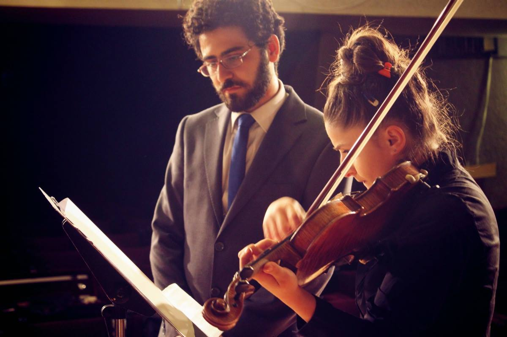

Arash Azadi english | русский | works | contact

Hartmann - for piano and orchestra (2017)
Question sexuelle - for prepared piano, 3 violins, 2 contrabasses, 2 flutes, clarinet in Bb and recorded narration (2016)
Passacaglia - for piano (2014)
Хартманн - для фортепиано с оркестром (2017)
Вопрос сексуальности - для подготовленного фортепиано, 3-х скрипок, 2-х контрабасов, 2-х флейт, кларнета в Bb и записанного повествования (2016)
Пассакалия - для фортепиано (2014)
Designed by Arash Azadi